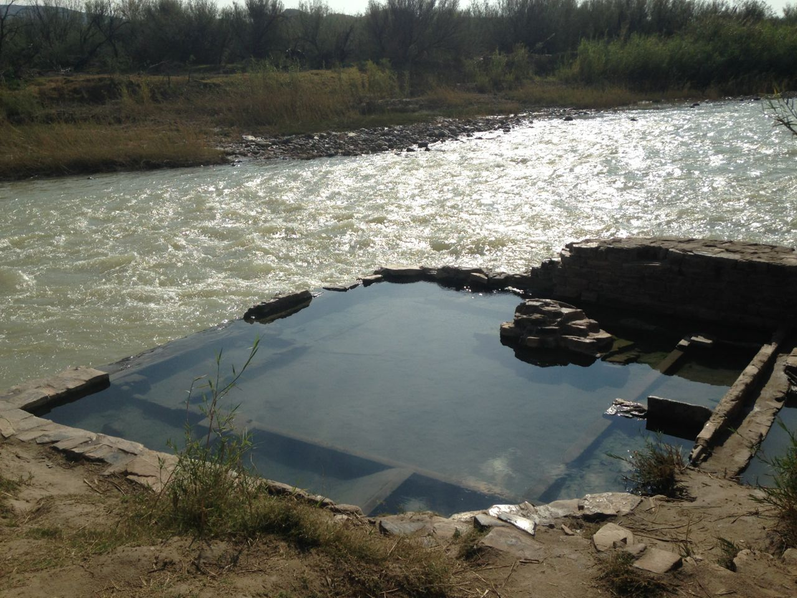
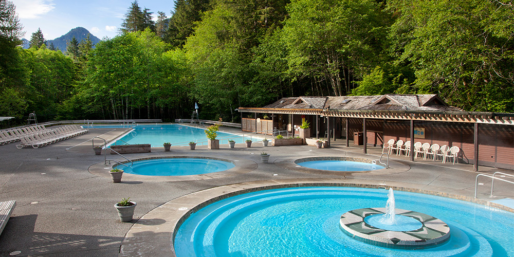
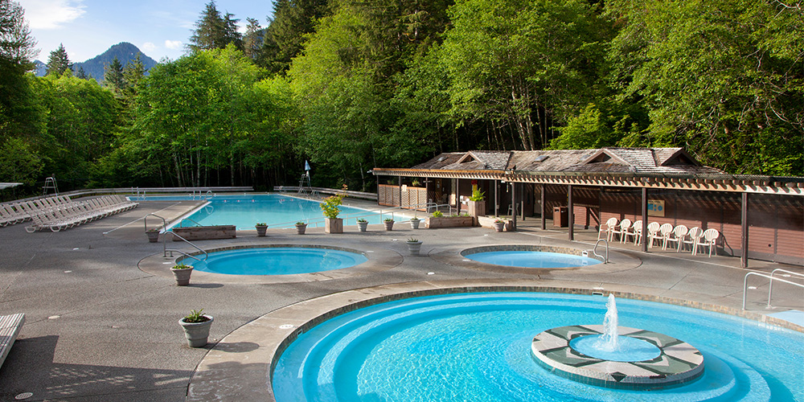
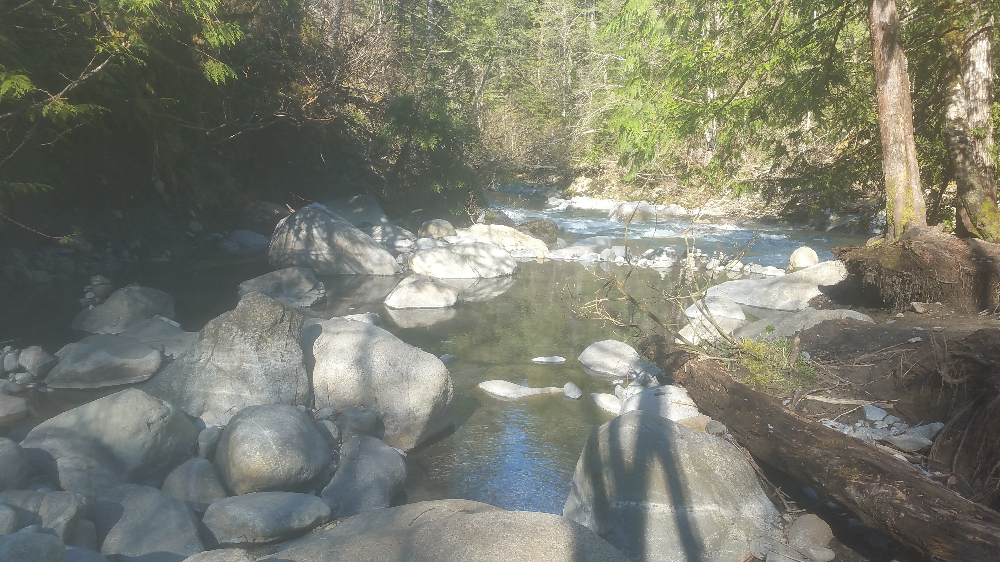
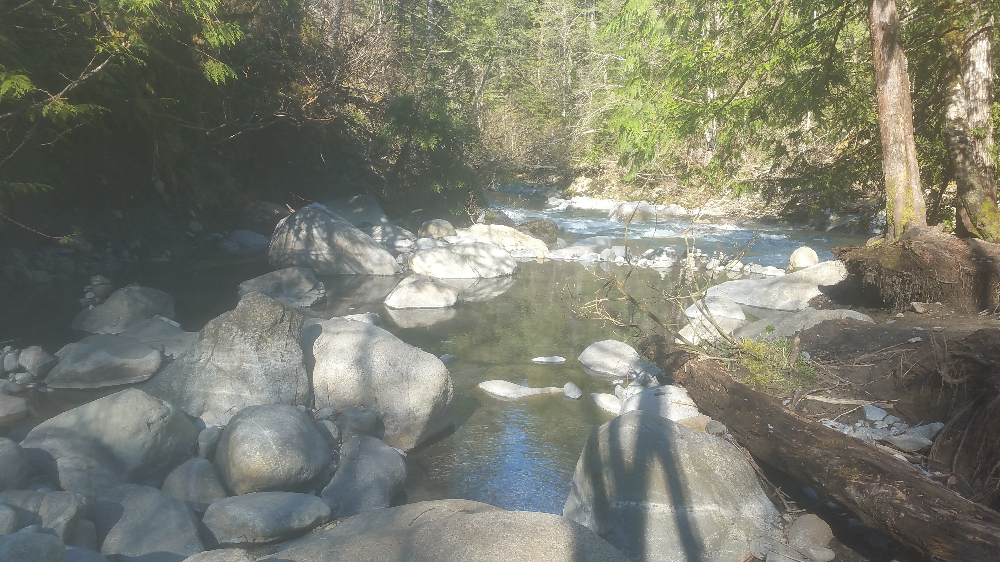
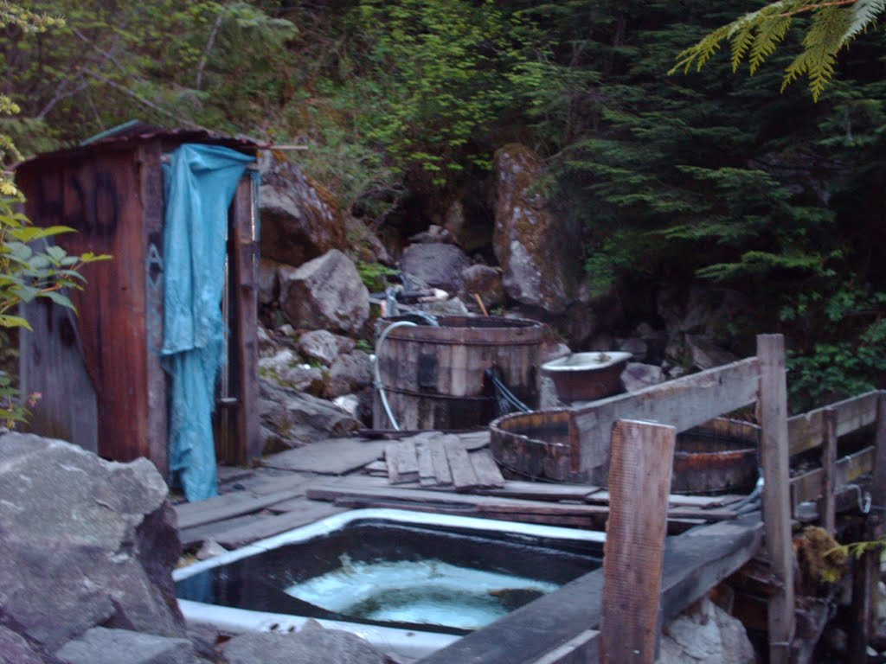
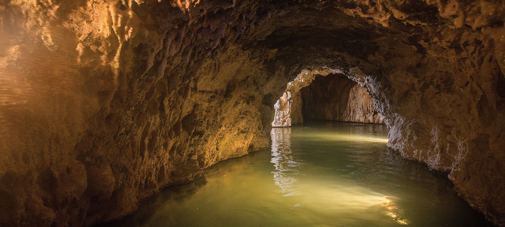

Hello again! For the few of you that actually regularly keep up with this blog, you'll know that this post with somewhat deviate from my usual format... but I hope you'll bear with me.
Hot springs are magical places. That's something that can be said about a lot of places, and a lot of things... but hot springs have a sense of enchantment that makes you feel truly at one with your self, your surroundings, your planet, and your place in this crazy tapestry we call the universe.
On our journeys across the Pacific Northwest (and Texas!), we were privileged enough to visit (and dunk in) more than a handful of hot springs, and meet kindred spirits while we all soaked together in the soup of bacteria, minerals, and sometimes--unfortunately--chlorine. I'm here to contribute what little I can, and compare each of these lovely places for fellow travelers, enthusiants, and wilderness seekers.
I'm going to compare the few PNW springs I've visited thusfar, but we're planning on visiting some new ones when we revisit. I'll be sure to update this post, then. That said, these are in order of how we visited them.
Big Bend Hot Springs (TX)
Photo credit to freeteaparty.org
Our first dip of the trip was in an unexpected place: Big Bend National Park, in Texas. Beside it already being one of our favorite parks, the hot springs here are awesome. Because the park is relatively isolated by the Chihuahuan Desert, you don't see nearly the kind of traffic some resort locations will get. The well-built stonework tub was originally built by J.O. Langford, and takes in hot water through a few pipes before overflowing into the Rio Grande, directly adjacent (yes, that's Mexico on the other side!). Sometimes, the Rio also overflows, washing right over the sides of the tub and leaving its characteristic, silty, "chocolate milk" look to the hot water. The river is very cold, which makes for a great cold plunge, if you're like me and into that sort of thing.
One of the coolest parts about these springs is that they are preceded by some historic sites, from as recent as the early 20th century to what you can feel was millennia before us. Petroglyphs and the scorch marks of countless campfires cover the rock, and the whole place has an ancient, mythical quality to it. This part of the Rio Grande was historically frequented by the Apache and Pueblo peoples.
Today, the park is still frequently traveled despite the desert, so expect to meet some fellow adventurous types while you're there. In one long soak we took we met some dozen other vandwellers, a guy that biked across the US, and a family visiting from Seoul!
Keep in mind that access to Big Bend requires an access fee, or purchase of an Annual Pass, which is at time-of-writing $80. Absolutely worth it if you plan on attending any National Parks this year.
Sol Duc Hot Springs (WA)
 

Photo credit to Olympic National Parks
Speaking of National Parks, our next hot spring visit of the trip was in the Olympic Peninsula of Washington. Our hope was to dunk in the faerie pools of Olympic Hot Springs, but the 24-mile roundtrip in the snowy mountains... "deterred" us. So, we ended up going to the Sol Duc Resort, instead, located up a river of the same name. The concrete pools range in temperature from cold to hot, and there is a strong sulfurous odor.
The resort is not wholly affiliated with the Park - as far as we could tell - and has attached cabins and restaurant. The Park surrounds the nearby mountains, and it's another place worth getting the Annual Pass for if you live in or visit the Northwest. However, expect some crowds.
Sloquet Hot Springs (BC)
 

Sloquet Hot Springs are the crown jewel of this list. Located in the heart of contemporary Xa'xtsa First Nation land, in the Fraser Valley of British Columbia, Sloquet is a sacred place to peoples both ancient and living. Located next to a campground some 4 hours down high-clearance, dirt roads into the Valley, the springs come out scalding hot before cooling down in a steppe of faerie pools and flowing into the adjacent Sloquet Creek. The water is heavy with silt, leaves, and other debris, but don't let that deter you. The running water, dreamcatchers hanging from nearby branches, and floating candle platforms give that place a feeling of true cleansing, and pure bliss.
Next to the springs are very well-made wooden changing shelters, to keep your clothing warm and dry. They have their fare share of cool graffiti.
As I said, it takes hours to get to these springs, and even though they show up in Google Maps they are not the easiest to find. Don't worry if you can't make it up the difficult road, there is the Harrison Hot Springs Resort located at the southern end of the valley just in case. If you do use a digital GPS: make sure you keep driving down the road past the marker, until you see the sign for the Rec Site and Campground. There is a fee for both day use of the hot spring and/or camping, so be sure to bring your Loonies and 2nies. And most of all--and this goes for all of the above and below--be respectful of this place and the people supporting it, and leave it better than you found it.
Clear Creek Hot Springs (BC)
Photo credit to Nicolai Hilckmann
Clear Creek is a fun little spot located on the other side of the Fraser Valley, British Columbia, from aforementioned Sloquet. Originally improved by a Crownland homesteader that was doing logging in the nearby forest, the old warm pool has since filled with moss, plants, and frogs. Now the springs are tapped by a series of rubber hoses, diverting the water into a series of displaced jacuzzis brought up there by one very ambitious redneck (or a few). Expect to scramble the arrangement of hoses more than a few times to get the water hot enough, and while it's not sulfurous don't count on the water being the cleanest of springs--the tubs don't drain as well as faerie pools.
The nice part about these springs is that they are totally free - save the 3 to 4 hour high-clearance trek it may take you to get there from Harrison - and you can camp virtually anywhere in the surrounding area so long as you're not interfering with the loggers. Because of this, expect pretty big crowds relative to the pool size (especially on weekends), and lots of kids/drunk people. As stated, try to clean this place up when you come, rather than leave it worse, as it needs all the love it can get. There are some pretty solid changing shelters here, so you can keep your towel out of the frequent rains.
Ainsworth Hot Springs Resort (BC)
Photo credit to Ainsworth Hot Springs
Ainsworth is a pretty awesome resort. Near to the friendly little town of Nelson, British Columbia, Ainsworth was first visited by the Ktunaxa First Nations and has been a resort since the 1930s. These days the outdoor springs don't have much of a natural feel to them - they are concrete pools, however there is very little chlorine smell - but that's not the real appeal of this resort. The best part is the actively-growing sandstone vaporcave, located adjacent to both the hot tub and the cold plunge. There are numerous spots in the caves where the hot water pours in, including a waterfall and numerous cracks and crevices. The thick steam is enjoyable and cleansing, but will wear most people out real quick: so make sure you drink lots of water! (Not the spring water)
For longterm soaking, there is a much larger warm pool that you can swim or sit in to your liking. Admission was $12 CAD/per at the time of our visiting, and was good for the remainder of the day. It being a resort, there is also a connected hotel and restaurant, but we have no experience with either. The link is available above.
Funnily enough, we came up to Ainsworth to locate some backcountry hot springs above the resort, which we could not locate even after some extensive snow-searching. The staff all denied the existence of the springs, but I found that hard to believe.
Lussier Hot Springs (BC)

Lussier Hot Springs, one of the two Whiteswan Lake/Top of the World Provincial Parks springs (the other being Ram Creek, in Top of the World), is a lovely series of natural faerie pools located adjacent to the cold, glacial waters of the Lussier River. The top pool is a toasty 110F or more, while the bottom pools vary in temperature and flow depending on how recently the visitors have shored up the walls. When we were there, we improved the upper wall of a chilly, bottom pool and had it above 100F in an hour! The water is highly bacterial and sulfuric, so be sure to keep your head above water in the pools unless you're really into that sort of thing. Many locals drink the river water over the nearby tap, however, so there's that.
This spot is free, and improved in that there is a gravel trail leading down to the springs. There is also a parking lot and bathroom at the top. Be careful walking back up there after a long soak, however, as you may find yourself mighty light-headed!
Expect crowds pretty much any day of the week, but particularly on weekends. It's enough of a "hidden" spot that you'll mostly encounter Canadian visitors, however, and they're all nice as can be.
Banff Upper Hot Springs Resort (AB)

Photo credit to weekendnotes.com
At the top of Sulphur Mountain, overlooking Canada's first National Park at the Cave and Basin, is the Upper Hot Springs Resort. A very improved hot spring, this large pool sits closer to warm at about 95-99F, and is highly chlorinated. While the view from the pool is spectacular, it is crowded daily and at all hours, so don't expect a peaceful soak while you're here.
Getting to the resort is quite simple if you're already in the lovely little town of Banff, and even with suit, towel, and locker rentals you won't spend too much more than $10 USD/per. There's also an attached gift shop and cafe.
While I wouldn't necessarily recommend this spot to anyone looking to find a special hot spring, it's certainly a place worth visiting if you are already in the area.
The End
Whether it's deep in the woods or built like a public pool, a hot spring is a very special place and should be treated as such. Enjoy these beautiful places, but do not alter them. And if you must change these places, leave them better than you found them, so that others may experience the same magical waters.
Thanks for reading. As I said, this post will be occasionally updated. Check back every now and then!